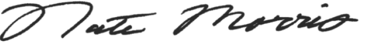

Through a combination of entrepreneurial spirit, a drive for innovation, and a passion for our people, we created a company that for more than a decade has led the way towards ending waste and helping to heal our planet.
However, we quickly realized that we could only reach our full potential when we looked even further. We had to find ways in which we could make a true human difference in the world. Rubicon.org is the manifestation of our sincere belief in a people-centric and environmentally conscious society. The world faces many challenges today, and at Rubicon.org we aim to do our part to lift all communities and help them create a better, brighter future. Giving is central to who we are, and our activities span a number of programs designed to make the most positive and broad-reaching impact possible.
“Rubicon.org exists because we know we have a mission beyond commerce.” Nate Morris
Founder and CEO, Rubicon
We partner with national organizations to tackle the largest issues we face as a country, such as our support for veterans’ groups like USA Cares, which stems from a recognition of the many sacrifices made by our veterans in order to bring safety and security to our homeland. At a local level, the Rubicon team volunteers its time to support charities and social organizations that are working to address the immediate problems faced by disadvantaged communities across the country. And, of course, we also dedicate time to supporting environmental initiatives such as our team’s participation in the annual Sweep the Hooch event, where volunteers restore and protect the magnificent Chattahoochee River in the state of Georgia. While environmental clean-up efforts like these obviously advance our organization’s overall ESG goals, we believe they are crucial because a cleaner environment creates safer, stronger communities.
“Our goal, and we hope you share it, is to create a healthier, safer, and more prosperous world for all humankind.”
Rubicon.org exists because we know we have a mission beyond commerce, and we want to leave a positive mark on the communities that we serve. There are social and environmental problems that demand immediate action, and we believe it is our duty to tackle those challenges.
Our goal, and we hope you share it, is to create a healthier, safer, and more prosperous world for all humankind.
Nate Morris
Founder and CEO, Rubicon
Founder and CEO, Rubicon
To find out more about Rubicon.org, our mission, and our charitable activities, or to discuss partnership opportunities, please contact us.